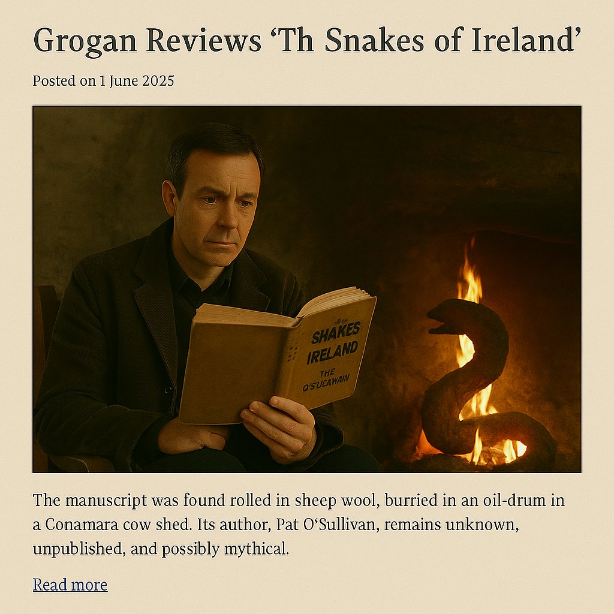

The manuscript was found rolled in sheep wool, buried in an oil-drum in a Conamara cow shed. Its author, Pat O’Sullivan, remains unknown, unpublished, and possibly mythical. Naturally, Grogan couldn’t resist.

📚 “It reads like Flann O’Brien joined a cult and took a vow of venom.” — Grogan
*The Snakes of Ireland* is not a novel. It is an affliction. A manuscript that curses the hands that open it and hisses between its pages. Its plot — if that’s what you can call a spiralling series of visions involving a defrocked priest, a mute fiddler, and a talking eel named Séamas — defies summary. But Grogan tried anyway.
The story begins in a flooded bog. Or a burned abbey. Or a Westport pub — depending on which page you start with. The narrator (possibly dead) guides us through a surreal version of Ireland where the snakes never left, they just learned Irish and joined the civil service.
Each chapter reads like a different curse: poetic, unpredictable, and worryingly specific. One page is a Hiberno-English sonnet. The next, a pub receipt annotated with blood. There is no ISBN. There is no punctuation on Tuesdays.
And yet, it is glorious. Strange, maddening, and unmistakably Irish. O’Sullivan — if he exists — writes with the venom of a man bitten too many times by history, myth, and public broadcasting. His characters are saints, drunks, and failed revolutionaries, often in the same body.
Brogan called it “unreadable, therefore brilliant.” Grogan insists it is “an act of national exorcism disguised as folklore.” They both agree: it deserves no prize, and every shelf.
If *Ulysses* was written for Bloomsday, *The Snakes of Ireland* was written for Lámh Láidir Day — the secret, unsanctioned feast of chaos where banshees recite poetry and priests spontaneously combust.
And when Grogan finished it (by firelight, in a thunderstorm, drinking diluted holy water), he whispered, “It’s not a book. It’s a prophecy. And we’re already in chapter six.”
Grogan & Brogan